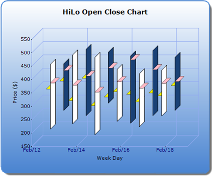

The “OpenTipColor” and “CloseTipColor” properties will allow the user to set a color for the open and close tips of HiLoOpenClose type series.
|
Details | |
|
Possible Values |
Any color values |
|
Default Value |
None |
|
2D / 3D Limitations |
No |
|
Applies to Chart Element |
All series |
|
Applies to Chart Types |
HiLoOpenClose Type |
The following code snippet illustrates this property:
|
[C#] //Sets the OpenTipColor for the series open tips.This can be done for any number of series this.ChartWebControl1.Series[0].ConfigItems.HiLoOpenCloseItem.OpenTipColor = Color.Pink; //Sets the CloseTipColor for the series close tips.This can be done for any number of series this.ChartWebControl1.Series[0].ConfigItems.HiLoOpenCloseItem.CloseTipColor = Color.Yellow; |
|
[VB] 'Sets the OpenTipColor for the series open tips.This can be done for any number of series Me.ChartWebControl1.Series(0).ConfigItems.HiLoOpenCloseItem.OpenTipColor = Color. Pink 'Sets the CloseTipColor for the series close tips.This can be done for any number of series Me.ChartWebControl1.Series(0).ConfigItems.HiLoOpenCloseItem.CloseTipColor = Color. Yellow
|

Figure 229: Set different color to Open/Close tips
Sample Link
To access a HiloOpenCloseChart sample:
1. Open the Syncfusion Dashboard
2. Select User Interface
3. Click the ASP.NET drop-down list and select Explore Samples
4. Navigate to Chart.Web -> Samples -> 3.5 -> Chart Types -> FinancialCharts